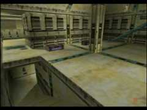
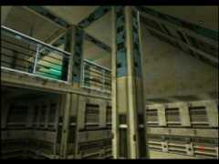
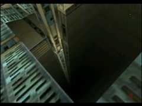
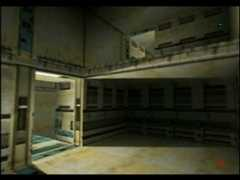
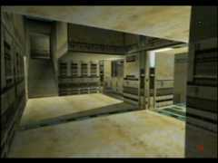
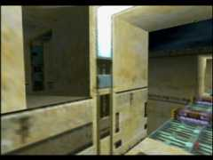
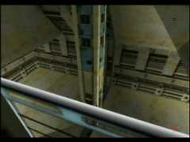
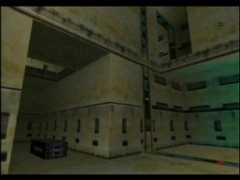
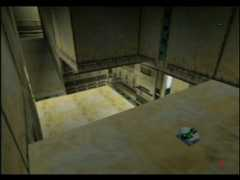

|
| Perfect
Dark : G5 Building |
| Attention,
Niveau Fourbu !!! C'est un dédale de petits couloirs vicieux
et autant de Petites Salles parsemées de Piliers. Au centre du niveau,
4 ponts étroits (et sans Barrières) organisent la Circulation entre
les différents étages. |
 |
 |
 |
Ces Ponts surplombent un énorme trou rectangulaire dont on ne voit même pas le fond. Attention donc en courant n'importe où, n'importe comment. Un autre Trou, plus petit lui, se trouve juste à coté, traversé par un Escalier. Ce niveau est certainement le plus petits en terme de surface. On peut être juste à coté de quelqu'un sans le voir, à cause des parois fines. Il n'y a pas beaucoup de piliers, mais attention aux accidents de grenades rebondissant dessus par erreur (et revenant vers vous !) ou aux zigzags lors de poursuites effrénées. Vous pourriez être ralentis considérablement (comme la salle aux piliers dans le Complexe). |
 |
 |
 |
Ce niveau est excellent pour qui aime débusquer le rat de son trou. C'est un niveau pour Joueurs rapides, qui aiment surprendre au coin d'un angle, d'un petit Coup de Silencieux… |
 |
 |
 |
Les Simulants ne se prennent pas trop la tête dans ce Niveau. Ils courent un peu partout, poursuivant le même objectif que vous. Dans la salle du Grand Trou, si un simulant vous croise, il restera à vous tirer dessus sans bouger. Profitez-en pour vous planquer et le pousser dans les Ténèbres. A noter qu'en mode King Of The Hill, vous aurez à défendre la Salle Du Grand Trou toute entière, quelque soit le Pont où vous vous trouvez : Assez Dur !!! |
 |
 |
 |
Ce Niveau est particulièrement dangereux en ce qui concerne tous les explosifs, vu l'Etroitesse des couloirs, des issues de secours, et vu aussi que les flammes traversent les murs… Le X-Ray Scan est bien vicieux, comme pour tous les petits niveaux, ainsi que le Farsight XR-20. Les armes Automatiques de Grande Boucheries sont efficaces, sauf si vous tombez sur quelqu'un connaissant le niveau mieux que vous. En effet il est très facile de passer d'un niveau à un autre et faire gaspiller ses munitions à l'Adversaire, en le perdant ou en le semant. |
 |
 |
 |
Il
y a dans ce niveau THE endroit du Campeur. Je suis sur que vous
avez tous remarqué ce mince cul-de-sac assez ombragé. Il est imparable
si vous avez de bonnes armes bien remplies. Attention toutefois
au trou au Plafond d'ou peut surgir (et sans prévenir) un Adversaire.
Si le coup est bien calculé vous n'aurez le temps de rien voir que
déjà votre tête sera truffée de plomb. Mais si vous êtes rapide,
qui sait… Le
Campeur aime bien en général le petit balcon baigné de lumière bleue.
Grace a lui on peut sympathiquement (et à l'abri) gratter les dos
des malheureux Passants sur un des 4 Ponts ! |
 |
 |
 |
Il y a aussi un tout Petit Creux dans le sol. Je ne vous le recommande pas trop, car trop exposé à 2 voies de circulation importantes. De plus si quelqu'un vous tire dessus, c'est automatiquement le Crâne qui prendra tout. |